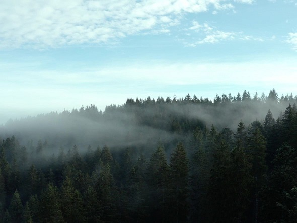

Wo der Schwarzwald tief ist, sind auch die Mythen nicht weit. Eine Legende, die in Furtwangen einfach nicht verschwinden will, geht etwa so: Hier soll es die höchste Selbstmordrate Deutschlands geben. In den 1990-er Jahren stürzten sich beispielsweise innerhalb eines Jahres zwei verzweifelte Seelen aus einem Studentenhochhaus.
Das hat aber schon früh begonnen. In den vergangenen Jahren gab es mehrmalige Selbstmorde von Studenten, die hinzugezogen sind, aber auch von einigen Bürgern Furtwangens. Selbst in den letzten drei Jahren gab es über 100 Selbsttötungen.
Doch warum?
Ursache des Gerüchts liegt aber weiter zurück: 1969 kam eine Sozialarbeiterin in ihrer Examensarbeit zum Ergebnis, dass Furtwangen eine hohe, im alten Kreis Donaueschingen die höchste Selbstmordrate aufwies. Allerdings wies sie auch darauf hin, dass ein Freitod in einer kleinen Stadt statistisch viel schwerer als in einer großen wiegt. "Aber wenn man mal Dreck am Kittel hat, bringt man ihn nicht mehr sauber" , sagt Krieg.
Erschreckend sind auch die Zahlen an plötzlich verschwundenen Bauernhöfen. Haben Sie etwas mit den Sagen zu tun? Man weiß es bis heute nicht!!
Man sagt, dass selbst heute noch Geister über die Friedhöfe umherziehen und versuchen ihre Familien zu finden und sie über ihre Lage zu kontaktieren.
Und wann bist du dran???
...